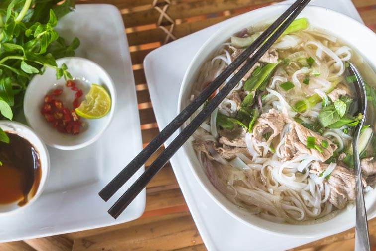
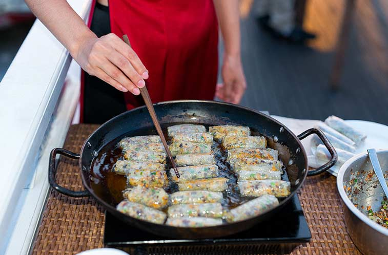
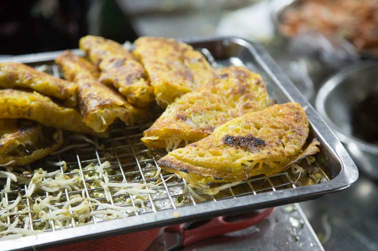
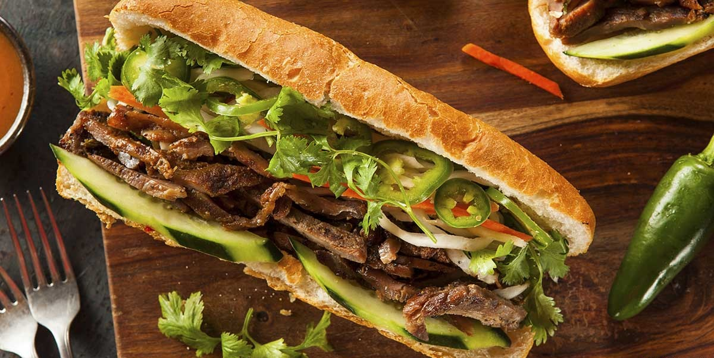
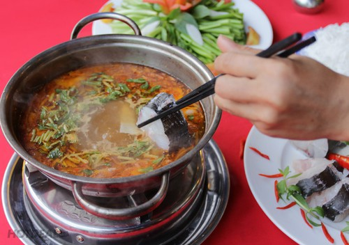
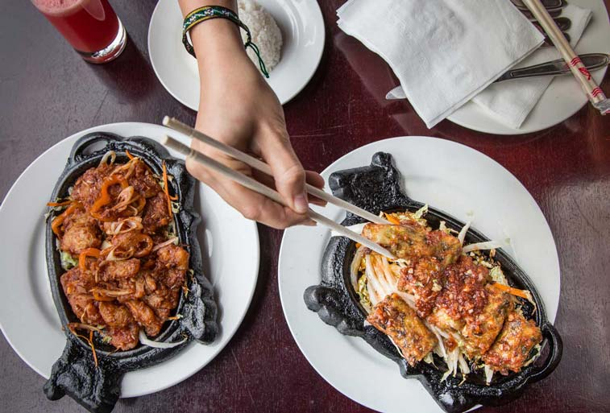
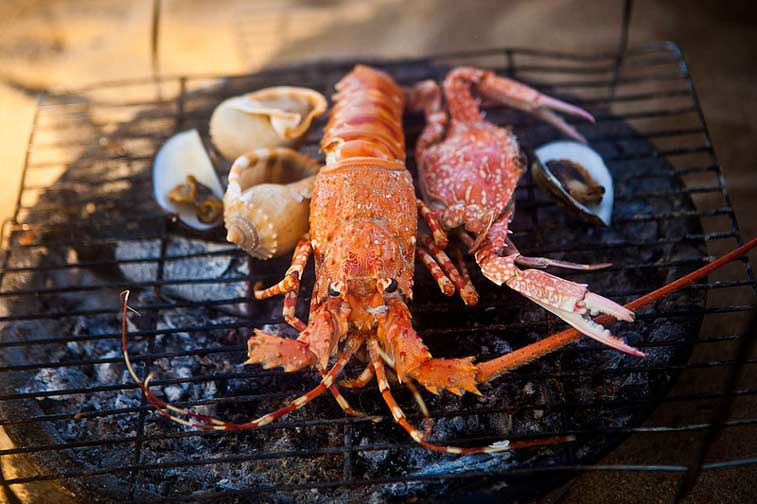
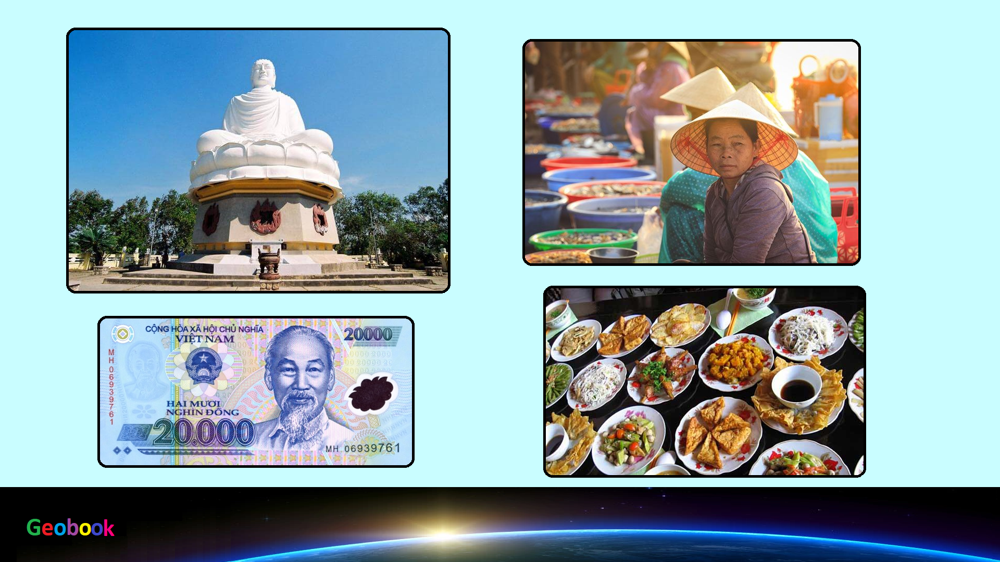

____
Традиционная еда
Суп Фо — Визиткой вьетнамской кухни считается суп Фо (Pho), вкусный суп с рисовой лапшой, курицей или говядиной и свежими травами и овощами. Суп Фо можно найти практически везде — от уличных лотков до дорогих ресторанов. В больших городах также довольно популярны фаст-фуды Фо (лучший вариант попробовать настоящий Фо). В ресторанах суп Фо часто подают в компании с зеленью, лаймом, чили и соевым соусом — для самостоятельной «доводки вкуса».

Спринг-роллы — Традиционные спринг-ролы (Spring rolls) готовят со свининой, рисовой лапшой и овощами. Во вьетнамских меню также часто можно встретить овощные роллы и роллы с морепродуктами. Едят роллы, заворачивая их в лист салата и мокая в ореховый или рыбный соус. Кроме традиционных спринг — роллов (которые обжариваются во фритюре) часто также встречаются фреш-роллы.

Креп — блины — Еще один шедевр вьетнамской кухни — тоненькие блины с различными начинками (Bánh Xèo). Блины также часто едят, заворачивая в лист салата.

Вьетнамские сендвичи — Вьетнамские сендвичи (Bánh Mì) — французское наследие во Вьетнаме. Огромные сендвичи сооружаются из хрустящих французских багетов. Начинка может самой разной.

Хот — пот — Блюдо, которые вы готовите себе сами, на горелке, которая ставится прямо на столе. Вам приносят кастрюлю с бульйоном или водой и набор ингредиентов, который, собственно, входит в заказанное блюдо.

Местные спешиалс — В каждом из вьетнамских городов есть свои спешиалс (местные блюда, которые можно попробовать только в этом регионе). Путешествуя по Вьетнаму, обязательно заглядывайте на странички спешиалс и пробуйте местные блюда.

Гриль из морепродуктов — Свежайшие морепродукты на гриле, которые предлагаются, в основном, в пляжных регионах Вьетнама — вкусно и очень атмосферно!

____
